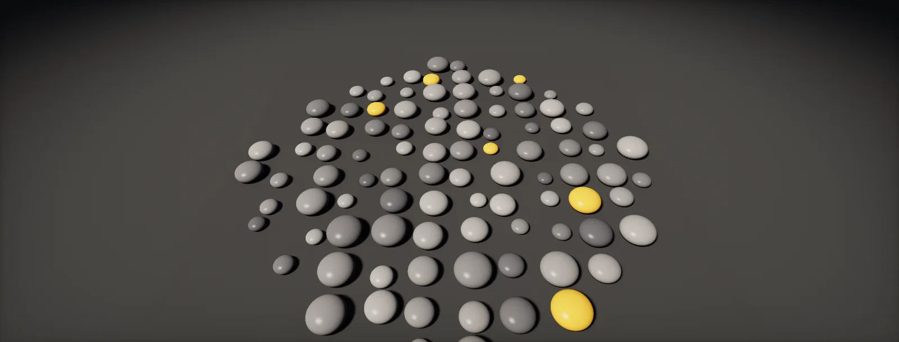

Pixel Processor and FX-Maps
The two programmable nodes of Substance Designer: function graphs, the Pixel Processor as a pixel shader, sampling neighbours, and FX-Maps that draw patterns through quadtrees and Iterate nodes, with random values per pattern.

Function graphs: small programs for values
Image nodes are not the only graphs in Designer. Almost any parameter can be driven by a : a small graph whose nodes are maths on single values (floats, vectors, integers, booleans) instead of images. It ends in one output value and is evaluated whenever that value is needed.
Function graphs appear in four places:
- Parameter functions: the value of one node parameter computed from exposed inputs, so one slider can drive many nodes (driving many nodes).
- Value Processor: computes a single value, once, to pass on.
- Pixel Processor: computes one value per pixel of an image.
- FX-Map: computes values per drawn pattern, such as its position, size or rotation.
Inside a function, Get nodes read values: exposed inputs of the graph, and built-in such as $size (the node's size in pixels), $pos (the current pixel or pattern position), $number and $depth (inside FX-Maps). Arithmetic, comparisons, If…Else, swizzles and samplers do the rest. If you have read a shader, this is the same vocabulary as shader built-ins drawn as nodes.
One technical difference matters later: Adobe notes that functions run on the CPU engine, except inside Pixel Processors, whose functions run on the GPU.
The Pixel Processor: a pixel shader
A Pixel Processor runs its function once for every pixel of its output, with $pos set to that pixel's position from 0 to 1. Whatever the function returns becomes the pixel. It is the same model as a pixel shader: one small program, run for every pixel in parallel, and no pixel can see what the others computed.
A soft dot pattern is four nodes: take $pos, repeat it with frac($pos · n), measure the distance to the cell centre, and turn the distance into a soft edge:
The Color mode setting switches between a greyscale output (the function returns a float) and colour (a float4). Its size and format follow the usual inheritance; because the function works in 0–1 positions, the result is resolution independent.
Reading inputs and neighbours
A Pixel Processor can take input images. Inside the function, Sample Grayscale and Sample Color nodes read input number n at a position you compute, with nearest or bilinear filtering. Read at $pos and you get the input pixel under the current one; read at $pos plus an offset and you get a neighbour.
Offsets are in 0–1 units, so one pixel is 1 / $size. That single conversion is behind every hand-made filter: edge detection, a slope or normal from a height, a custom blur, a dilation that fills the gaps between UV islands:
Three rules. Wrap positions with frac when they may leave 0–1, or the result will not tile. Every sample is a texture read per pixel, so a 9-tap filter costs nine times a 1-tap one. And a Pixel Processor cannot read its own output: there is no feedback. Iterative effects (spreading, growing, a flood fill) need a chain of Pixel Processors, each reading the previous one.
FX-Maps: drawing patterns
An FX-Map works the other way round. Instead of computing every pixel, it draws patterns into the image: squares, discs, gaussian spots, or an input image, each placed, scaled, rotated and coloured. Inside, it is a small graph of three node types:
- Quadrant draws a pattern in its cell and splits the cell into four for the nodes below it. A chain of Quadrants builds a : level 0 is the whole image, level 1 four quarters, level 2 sixteen cells, and so on.
- Iterate repeats the branch below it a number of times, for scattering N copies.
- Switch chooses one of two branches, from a function.
Designer walks the whole tree when it renders, top to bottom, drawing as it goes. Each Quadrant level multiplies the number of patterns by four:
This is how the classic Substance noises and tile patterns are built: one pattern per cell at some level, with a little randomness in position and size. Six levels already mean 4096 patterns in the deepest level, and every one is drawn separately.
Random values and blending per pattern
An FX-Map that drew identical patterns would be a stamp. Its parameters (offset, size, rotation, colour) accept functions that are evaluated for every pattern drawn, with $number (which copy this is, from 0), $depth (the Quadrant level) and $pos (the pattern's birth position) available. A Random node returns a value between 0 and a maximum that is different for every pattern but the same every time the graph renders, because it is driven by a random seed. Change the seed and you get a new layout; keep it and the result is stable.
How overlapping patterns combine is the Quadrant's Blending Mode. For heights, Max is almost always right; Add makes overlaps pile up and clip:
Expose the graph's random seed (every graph has one) and users of the material can reshuffle all random layouts with one value, which is how many variations of the same material are made.
Ready-made scattering tools
Writing FX-Maps by hand is rarely necessary. The library has scattering nodes with dozens of exposed controls, and they are the first thing to reach for:
- Tile Sampler: places a pattern or input images on a grid, with random offset, scale, rotation and luminance per tile, optional masks and scale maps. Bricks, scales, tiles, scattered leaves.
- Tile Generator: the older, simpler relative of Tile Sampler. Adobe notes it gets slower as you add patterns.
- Shape Splatter and the Splatter family: scatter shapes according to masks, with collision-like spacing, for pebbles and debris.
Open them (they are graphs) to learn how they are built. Write your own FX-Map or Pixel Processor when none of them can express the layout, for example patterns that follow a spline or a rule that depends on a neighbour.
Pixel Processor or FX-Map?
The two nodes split the same job differently. A Pixel Processor gathers: every pixel asks "what am I?", so its cost is fixed by the number of pixels times the reads per pixel. An FX-Map scatters: every pattern paints the pixels it covers, so its cost depends on how many patterns there are and how large they are:
Pixel Processors are the right tool for anything defined per position: gradients, distance fields, custom filters, remaps. FX-Maps are the right tool for many separate, overlapping things: scattered stones, splotches, particles. Two notes from Adobe's guidelines: FX-Maps are costly and not recommended for graphs that render on mobile, and their functions run on the CPU, so heavy image sampling inside an FX-Map is slow compared with the same sampling in a Pixel Processor.
Set it up in Designer and Unity HDRP
First the two nodes in Designer: the soft-dot Pixel Processor and a scatter FX-Map with Iterate. Then the same two ideas in Unity as a compute shader, which is what a Pixel Processor is: one kernel gathers per pixel, the other turns a scatter into a gather by looping over a buffer of patterns. An editor menu bakes both to PNG. Written for Substance 3D Designer 14 and later, Unity 6 with HDRP 17 and the Substance 3D for Unity plugin; menu names can differ slightly between versions.
- In Designer, add a Pixel Processor and double-click its Per Pixel Function to open the function graph. Add Get Float2 set to
$pos, multiply by a Float constant (the repeat count n), and feed it through Fract. - Subtract a Float2 of (0.5, 0.5), take the Length, subtract it from the radius, divide by the softness, and finish with a Clamp from 0 to 1. Set the last node as the output (right-click, Set as output node). The 2D view shows the dots of the first widget.
- Expose the radius: in the function, replace the constant with a Get Float reading a graph input you created in the graph's Input Parameters. The same value can now drive other nodes too.
- Add an FX-Map node and open it. Connect a Quadrant under the Iterate node; set the Iterate count (say 60) and the Quadrant's Pattern to a soft disc (or Paraboloid) with Blending Mode
Max. - On the Quadrant's Pattern Offset, open the parameter function and build a random position: two Random nodes with a maximum of 1, combined into a Float2. Do the same for Pattern Size with a range. Each copy now lands somewhere else; change the graph's Random Seed to reshuffle.
- In Unity, create
Assets/Editor/and putProceduralBake.computeandProceduralBaker.csin it (the compute shader can live anywhere; the script finds it by name). - Use Tools > Atlas > Bake Soft Dots and Bake Scatter. Each dispatches a kernel into a RenderTexture, reads it back and writes a PNG into
Assets/Baked/, imported with sRGB off since it is data. - Change the parameters at the top of
ProceduralBaker.csand bake again. TheScatterMaxkernel loops over every pattern for every pixel; for thousands of patterns, bin them into a grid first, the same optimisation that makes the Quadrant tree fast.
// A Pixel Processor is a compute kernel: one thread per output pixel.
#pragma kernel SoftDots
#pragma kernel ScatterMax
RWTexture2D<float4> _Out;
uint _Size;
float _Repeat, _Radius, _Soft;
[numthreads(8, 8, 1)]
void SoftDots(uint3 id : SV_DispatchThreadID)
{
if (id.x >= _Size || id.y >= _Size) return;
float2 pos = (id.xy + 0.5) / _Size; // $pos
float2 q = frac(pos * _Repeat) - 0.5; // repeat, centred cell
float v = saturate((_Radius - length(q)) / _Soft); // soft dot
_Out[id.xy] = float4(v, v, v, 1);
}
// An FX-Map scatters patterns. Here every pixel gathers instead: it loops over all patterns
// and keeps the tallest dome (Max blending). Positions wrap so the result tiles.
struct Pattern { float2 pos; float radius; float height; };
StructuredBuffer<Pattern> _Patterns;
uint _Count;
[numthreads(8, 8, 1)]
void ScatterMax(uint3 id : SV_DispatchThreadID)
{
if (id.x >= _Size || id.y >= _Size) return;
float2 pos = (id.xy + 0.5) / _Size;
float h = 0;
for (uint i = 0; i < _Count; i++)
{
Pattern p = _Patterns[i];
float2 d = abs(pos - p.pos);
d = min(d, 1.0 - d); // wrap around the tile border
float r = length(d) / p.radius;
if (r < 1) h = max(h, sqrt(1 - r * r) * p.height);
}
_Out[id.xy] = float4(h, h, h, 1);
}#if UNITY_EDITOR
using System.IO;
using System.Runtime.InteropServices;
using UnityEditor;
using UnityEngine;
// Bakes the two kernels of ProceduralBake.compute to PNG files in Assets/Baked.
public static class ProceduralBaker
{
const int Size = 1024;
const float Repeat = 3f, Radius = 0.3f, Soft = 0.05f; // soft dots
const int Count = 60, Seed = 3; // scatter
const float MinRadius = 0.04f, MaxRadius = 0.12f;
struct Pattern { public Vector2 pos; public float radius; public float height; }
[MenuItem("Tools/Atlas/Bake Soft Dots")]
static void BakeDots()
{
var cs = FindCompute();
int k = cs.FindKernel("SoftDots");
cs.SetFloat("_Repeat", Repeat); cs.SetFloat("_Radius", Radius); cs.SetFloat("_Soft", Soft);
Run(cs, k, "SoftDots");
}
[MenuItem("Tools/Atlas/Bake Scatter")]
static void BakeScatter()
{
var cs = FindCompute();
int k = cs.FindKernel("ScatterMax");
var rnd = new System.Random(Seed); // same seed, same layout
var pats = new Pattern[Count];
for (int i = 0; i < Count; i++)
{
float r = Mathf.Lerp(MinRadius, MaxRadius, (float)rnd.NextDouble());
pats[i] = new Pattern { pos = new Vector2((float)rnd.NextDouble(), (float)rnd.NextDouble()), radius = r, height = Mathf.Lerp(0.6f, 1f, r / MaxRadius) };
}
using (var buf = new ComputeBuffer(Count, Marshal.SizeOf<Pattern>()))
{
buf.SetData(pats);
cs.SetBuffer(k, "_Patterns", buf);
cs.SetInt("_Count", Count);
Run(cs, k, "Scatter");
}
}
static ComputeShader FindCompute()
{
string[] g = AssetDatabase.FindAssets("ProceduralBake t:ComputeShader");
if (g.Length == 0) throw new FileNotFoundException("ProceduralBake.compute not found in the project.");
return AssetDatabase.LoadAssetAtPath<ComputeShader>(AssetDatabase.GUIDToAssetPath(g[0]));
}
static void Run(ComputeShader cs, int kernel, string name)
{
var rt = new RenderTexture(Size, Size, 0, RenderTextureFormat.ARGB32, RenderTextureReadWrite.Linear) { enableRandomWrite = true };
rt.Create();
cs.SetTexture(kernel, "_Out", rt);
cs.SetInt("_Size", Size);
cs.Dispatch(kernel, (Size + 7) / 8, (Size + 7) / 8, 1);
var prev = RenderTexture.active;
RenderTexture.active = rt;
var tex = new Texture2D(Size, Size, TextureFormat.RGBA32, false, true);
tex.ReadPixels(new Rect(0, 0, Size, Size), 0, 0);
tex.Apply();
RenderTexture.active = prev;
rt.Release();
Directory.CreateDirectory("Assets/Baked");
string path = $"Assets/Baked/{name}.png";
File.WriteAllBytes(path, tex.EncodeToPNG());
Object.DestroyImmediate(tex);
AssetDatabase.ImportAsset(path);
var imp = (TextureImporter)AssetImporter.GetAtPath(path);
imp.sRGBTexture = false; // data, not colour
imp.SaveAndReimport();
Debug.Log($"Baked {path}");
}
}
#endifThe compute version renders in milliseconds on the GPU, but it is not a replacement for Designer: there is no node editor, no preview and no SBSAR. Use it when a game needs to generate or regenerate a texture itself, for example from level data; Compute Shaders explains the dispatch and readback.
Sources and further reading
The formulas and engine details in this unit come from these references. Engine documentation changes between versions.
- DocsPixel processorAdobeThe per-pixel function, input images and colour mode.
- DocsBuilt-in variablesAdobe$pos, $size, $number, $depth and the rest, per context.
- DocsFX-Maps: how it worksAdobeQuadrant, Iterate and Switch, and how the tree is walked.
- DocsThe Quadrant nodeAdobePattern, offset, size, rotation, blending mode and random seed per pattern.
- DocsPerformance optimization guidelinesAdobeWhere functions run and why FX-Maps are costly.